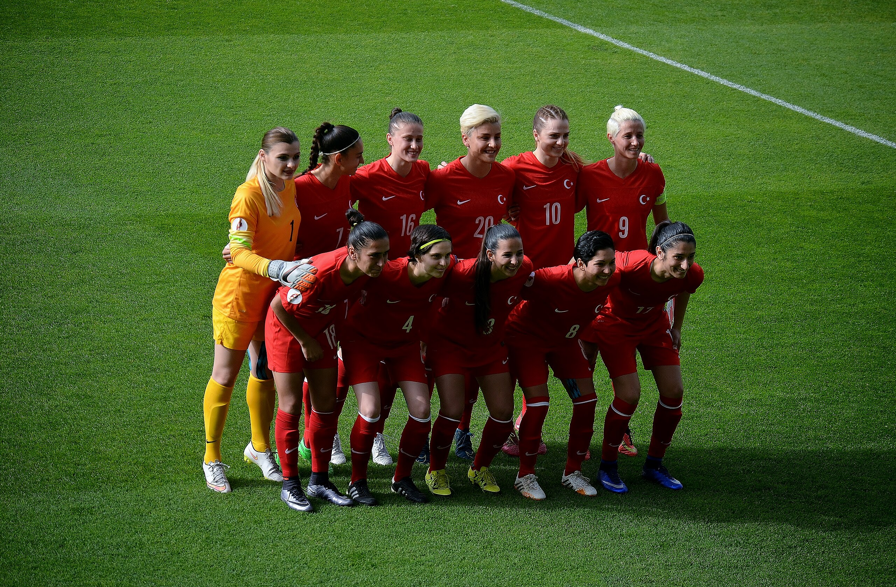

In 1954, a group of women in Türkiye laced up their cleets, stepped onto the pitch, and kicked off what would become a years long battle for recognition. Women’s soccer in Türkiye, much like in other areas of the world, was not simply about the game, it was about challenging existing gender norms, defying institutional neglect, carving out a space in a sport historically dominated by men.
 "Turkey women's national football team in the home match against Germany on 8 April 2016"Their efforts were met with silence. No league, no funding, no official backing. The Turkish Football Federation (TFF) ignored their existence. Society framed their ambition as a pastime at best, a defiance of femininity at worst. The first official league would not arrive until 1994, a fleeting experiment that was suspended in 2003 due to financial instability. Players like Bilgin Defterli, one of Türkiye’s pioneering female footballers, had to leave the country to find professional opportunities in Germany.
Still, besides all odds, the sport insisted to fight. The initiations like Kızlar Sahada ("Girls on the Field") and similar organizations provided a grassroots foundation for women’s soccer, proving that the passion for the sport was unstoppable, no matter the obstacles. In 2006, the women's league was reinstated, but it remained underfunded, and teams struggles for sponsorships and facilities that were adequate. The pandemic, ironically, became the catalyst for change.
With global conversations around gender equity in sports growing, Türkiye’s football institutions finally decided to act. Turkish Women’s Football Super League was born in 2021, with major men’s clubs like Fenerbahçe, Galatasaray, and Beşiktaş establishing their women’s teams. Suddenly, sponsorships poured in, media coverage increased, and a national league that had once been abandoned was now a marker of Türkiye’s modernization.
“It was April 2012... Serra and I were chatting with our male friends over social media. We kept telling them, ‘Come on, let us play too!’ but guess what? They mocked our call to play football. Serra called their bluff. We organized a match, and 18 women showed up. That night was the first time any of us had taken the field. We lost 6-2, but I won something priceless. I felt what it means to be empowered by team spirit.”
— Melis Abacıoğlu, founder of Kızlar Sahada
In the following video about Women's football in Türkiye, a woman player Dila Taşdemir, states: "We are revealing the power of women in every sense; we see that women can perform in every branch. Why is it that stadiums are packed for men’s teams but not for women’s? If a man can do it, so can a woman."
(You can watch the video with automatic translated captions)
This quote from Taşdemir powerfully shows the core of the issue: visibility and equity. Her words go beyond sports, they confront societal norms that continue to measure women’s worth through limited perspectives. Full stadiums for men and empty seats for women aren’t only about interest , they show unfairness in media coverage, funding, and institutional support. Taşdemir’s challenge to that status quo makes us rethink what we value and who we show up for.

Galatasaray Women’s Match
Galatasaray Men’s Match
But success comes with its own battles. Even today, when people hear the word “football,” they usually think of men. Women’s football still struggles to find enough sponsors, and matches rarely make it into mainstream media. Female players earn far less than their male counterparts and compete in near invisibility. The image of the ‘ideal’ female footballer -long-haired, feminine, conforming- persists. Players recount being told to grow their hair, to tone down aggression, to "play like women.” Research by Nuhrat (2022) highlights how societal pressures still shape the expectations of female athletes in Türkiye. In addition, reports show the lack of infrastructural investment in women’s teams compared to men's, limiting opportunities for professional development.
The growth of women’s football isn’t just about the eleven players on the pitch. It’s about a broader cultural transformation. Without more support, visibility, and gender-equal policies, true equality in football won’t be possible. To give women’s football the recognition it deserves, media coverage, sponsorships, and especially public awareness are absolutely required.
But how does Türkiye compare globally when it comes to fan support in women’s football? Try ranking these countries by their highest recorded match attendances and see where Türkiye stands according to 2024 FIFA Womens Football Benchmarking Report:
Drag and drop to rank these countries by their highest recorded single-match attendances in women's football:
- England
- Brazil
- Germany
- USA
- Türkiye
One promising indicator is fan attendance. Türkiye may currently rank behind countries like England or Brazil in single-match attendance, but the numbers are steadily rising. A record crowd of 28,000 fans signals not just interest—but investment, belief, and momentum. As more spectators fill the stands and more clubs commit to their women’s teams, the message becomes clear: this game belongs to everyone, women and men.
Türkiye's journey in women’s football is far from over. The institutions have changed, the support has grown, but the fight continues. Pay gaps remain, visibility is inconsistent, and resources are disproportionately allocated. And yet, as these women continue to defy history, one thing is certain: the game is finally theirs to play.
Works Cited
- Elmas, Safter, and F. Hülya Aşçı. “Gender-Stereotyped Barriers Against Women Football Players in Turkey: A Qualitative Perspective on the Eccles’ Expectancy-Value Theory.” Pamukkale Journal of Sport Sciences, vol. 13, no. 3, 2022, pp. 146–173. https://doi.org/10.54141/psbd.1109812.
- Erhart, Itır. “Ladies of Beşiktaş: A Dismantling of Male Hegemony at İnönü Stadium.” International Review for the Sociology of Sport, vol. 48, no. 1, 2013, pp. 83–98. https://doi.org/10.1177/1012690211433460.
- FIFA. FIFA Women’s Football Benchmarking Report: Setting the Pace. Fédération Internationale de Football Association (FIFA), 2024. https://www.fifa.com/legal/reports/benchmarking-reports.
- Koçak, Mehmet, and Dila Şeyda Taşdemir. “Tarihsel Süreç İçerisinde Kadın Futbolunda Cinsiyet Eşitsizliği.” Journal of History School, vol. 15, no. 58, 2022, pp. 1868–1882. https://doi.org/10.29228/Joh.55058.
- Kavasoğlu, İpek, and Mehmet Bozok. “Ya Saçın Ya Takım! Türkiye’de Kadın Futbolunda Beden Politikaları ve Direniş Olanakları.” Toplum ve Bilim, no. 163, 2022, pp. 129–160.
- Nuhrat, Yağmur. “‘Girls on the Field’ in Turkey: Negotiating Gender Anxieties and Norms through Football.” Sport in Society, vol. 25, no. 10, 2022, pp. 2024–2040. https://doi.org/10.1080/17430437.2021.1904903.